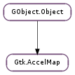

| static | add_entry(accel_path, accel_key, accel_mods) |
| static | add_filter(filter_pattern) |
| static | change_entry(accel_path, accel_key, accel_mods, replace) |
| static | foreach(data, foreach_func) |
| static | foreach_unfiltered(data, foreach_func) |
| static | get() |
| static | load(file_name) |
| static | load_fd(fd) |
| static | load_scanner(scanner) |
| static | lock_path(accel_path) |
| static | lookup_entry(accel_path) |
| static | save(file_name) |
| static | save_fd(fd) |
| static | unlock_path(accel_path) |
None
| Name | Parameters | Return | Description |
|---|---|---|---|
| changed | str, int, Gdk.ModifierType | Notifies of a change in the global accelerator map. The path is also used as the detail for the signal, so it is possible to connect to changed::accel_path. |
Bases: GObject.Object
Accelerator maps are used to define runtime configurable accelerators. Functions for manipulating them are are usually used by higher level convenience mechanisms like Gtk.UIManager and are thus considered “low-level”. You’ll want to use them if you’re manually creating menus that should have user-configurable accelerators.
Accelerator is uniquely defined by:
The accelerator path must consist of “<WINDOWTYPE>/Category1/Category2/.../Action”, where WINDOWTYPE should be a unique application-specific identifier that corresponds to the kind of window the accelerator is being used in, e.g. “Gimp-Image”, “Abiword-Document” or “Gnumeric-Settings”. The “Category1/.../Action” portion is most appropriately chosen by the action the accelerator triggers, i.e. for accelerators on menu items, choose the item’s menu path, e.g. “File/Save As”, “Image/View/Zoom” or “Edit/Select All”. So a full valid accelerator path may look like: “<Gimp-Toolbox>/File/Dialogs/Tool Options...”.
All accelerators are stored inside one global Gtk.AccelMap that can be obtained using Gtk.AccelMap.get (). See Monitoring changes for additional details.
Manipulating accelerators
New accelerators can be added using Gtk.AccelMap.add_entry (). To search for specific accelerator, use Gtk.AccelMap.lookup_entry (). Modifications of existing accelerators should be done using Gtk.AccelMap.change_entry ().
In order to avoid having some accelerators changed, they can be locked using Gtk.AccelMap.lock_path (). Unlocking is done using Gtk.AccelMap.unlock_path ().
Saving and loading accelerator maps
Accelerator maps can be saved to and loaded from some external resource. For simple saving and loading from file, Gtk.AccelMap.save () and Gtk.AccelMap.load () are provided. Saving and loading can also be done by providing file descriptor to Gtk.AccelMap.save_fd () and Gtk.AccelMap.load_fd ().
Monitoring changes
Gtk.AccelMap object is only useful for monitoring changes of accelerators. By connecting to Gtk.AccelMap ::changed signal, one can monitor changes of all accelerators. It is also possible to monitor only single accelerator path by using it as a detail of the Gtk.AccelMap ::changed signal.
| Parameters: |
|
|---|
Registers a new accelerator with the global accelerator map. This function should only be called once per accel_path with the canonical accel_key and accel_mods for this path. To change the accelerator during runtime programatically, use Gtk.AccelMap.change_entry ().
Set accel_key and accel_mods to 0 to request a removal of the accelerator.
Note that accel_path string will be stored in a GLib.Quark. Therefore, if you pass a static string, you can save some memory by interning it first with GLib.intern_static_string ().
| Parameters: | filter_pattern (str) – a pattern (see GLib.PatternSpec ) |
|---|
Adds a filter to the global list of accel path filters.
Accel map entries whose accel path matches one of the filters are skipped by Gtk.AccelMap.foreach ().
This function is intended for GTK+ modules that create their own menus, but don’t want them to be saved into the applications accelerator map dump.
| Parameters: |
|
|---|---|
| Returns: | |
| Return type: |
Changes the accel_key and accel_mods currently associated with accel_path. Due to conflicts with other accelerators, a change may not always be possible, replace indicates whether other accelerators may be deleted to resolve such conflicts. A change will only occur if all conflicts could be resolved (which might not be the case if conflicting accelerators are locked). Successful changes are indicated by a True return value.
Note that accel_path string will be stored in a GLib.Quark. Therefore, if you pass a static string, you can save some memory by interning it first with GLib.intern_static_string ().
| Parameters: |
|
|---|
Loops over the entries in the accelerator map whose accel path doesn’t match any of the filters added with Gtk.AccelMap.add_filter (), and execute foreach_func on each. The signature of foreach_func is that of Gtk.AccelMapForeach, the changed parameter indicates whether this accelerator was changed during runtime (thus, would need saving during an accelerator map dump).
| Parameters: |
|
|---|
Loops over all entries in the accelerator map, and execute foreach_func on each. The signature of foreach_func is that of Gtk.AccelMapForeach, the changed parameter indicates whether this accelerator was changed during runtime (thus, would need saving during an accelerator map dump).
| Returns: | the global Gtk.AccelMap object |
|---|---|
| Return type: | Gtk.AccelMap |
Gets the singleton global Gtk.AccelMap object. This object is useful only for notification of changes to the accelerator map via the ::changed signal; it isn’t a parameter to the other accelerator map functions.
| Parameters: | file_name (str) – a file containing accelerator specifications, in the GLib file name encoding |
|---|
Parses a file previously saved with Gtk.AccelMap.save () for accelerator specifications, and propagates them accordingly.
| Parameters: | fd (int) – a valid readable file descriptor |
|---|
Filedescriptor variant of Gtk.AccelMap.load ().
Note that the file descriptor will not be closed by this function.
| Parameters: | scanner (GLib.Scanner) – a GLib.Scanner which has already been provided with an input file |
|---|
GLib.Scanner variant of Gtk.AccelMap.load ().
| Parameters: | accel_path (str) – a valid accelerator path |
|---|
Locks the given accelerator path. If the accelerator map doesn’t yet contain an entry for accel_path, a new one is created.
Locking an accelerator path prevents its accelerator from being changed during runtime. A locked accelerator path can be unlocked by Gtk.AccelMap.unlock_path (). Refer to Gtk.AccelMap.change_entry () for information about runtime accelerator changes.
If called more than once, accel_path remains locked until Gtk.AccelMap.unlock_path () has been called an equivalent number of times.
Note that locking of individual accelerator paths is independent from locking the Gtk.AccelGroup containing them. For runtime accelerator changes to be possible, both the accelerator path and its Gtk.AccelGroup have to be unlocked.
| Parameters: | accel_path (str) – a valid accelerator path |
|---|---|
| Returns: | True if accel_path is known, False otherwise |
| Return type: | bool, key: Gtk.AccelKey |
Looks up the accelerator entry for accel_path and fills in key.
| Parameters: | file_name (str) – the name of the file to contain accelerator specifications, in the GLib file name encoding |
|---|
Saves current accelerator specifications (accelerator path, key and modifiers) to file_name. The file is written in a format suitable to be read back in by Gtk.AccelMap.load ().
| Parameters: | fd (int) – a valid writable file descriptor |
|---|
Filedescriptor variant of Gtk.AccelMap.save ().
Note that the file descriptor will not be closed by this function.
| Parameters: | accel_path (str) – a valid accelerator path |
|---|
Undoes the last call to Gtk.AccelMap.lock_path () on this accel_path. Refer to Gtk.AccelMap.lock_path () for information about accelerator path locking.